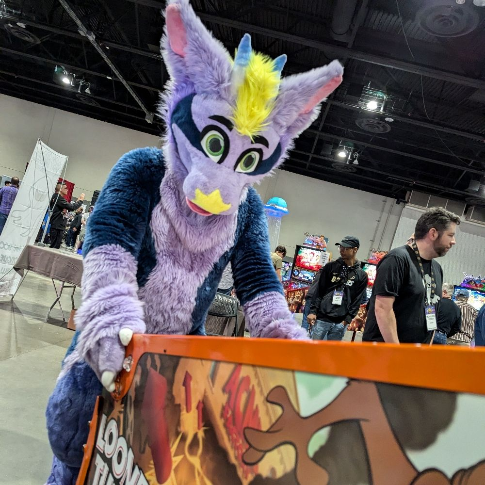
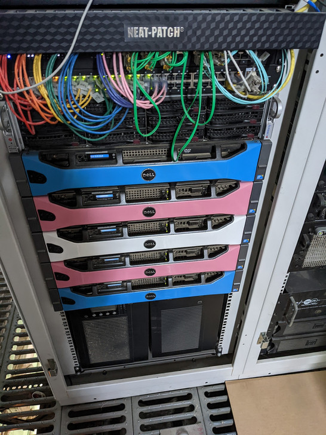
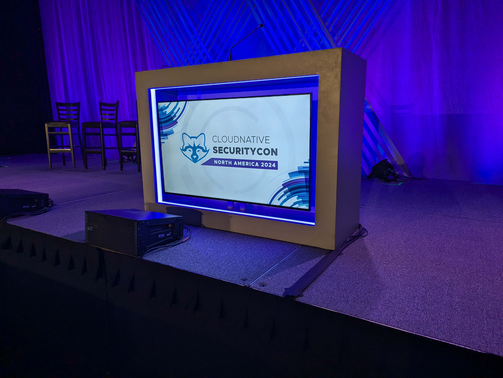

Welcome adventurer to the horde. You've discovered a first-hand exploration of the web where this dragon's keen-eyed notes are treasure AI can't even dream of. I’m Max Draco, and this blog indx embarks on my personal quest to uncover the paw prints embedded in the digital landscapes of the net.
It’s no secret that the furry community has been instrumental in various technology sectors, thanks in part to its creative and often technically adept members. From software developers to network engineers, the impact of furries on the very backbone of the internet is both significant and unique. This community's engagement extends beyond casual participation, influencing substantial advancements in tech culture and innovation.

The furry community is a welcoming space for LGBTQIA+ individuals and neurodivergent allies, creating a blend of perspectives that fuel innovation. This inclusivity enriches the community, offering a sanctuary where members not only thrive but lead significant projects. The internet, in its vast, sprawling essence, mirrors this diversity, becoming a reflective surface for the values and visions of those who build and maintain it.
The essence of furry interactions often transcends the digital, materializing powerfully in the real world through conventions, meetups, and dances. These gatherings are more than social events; they are networking hubs where ideas are exchanged, and collaborations are born. Historically, these meetups have a parallel in the early tech gatherings in Silicon Valley, where pioneers like Steve Wozniak and John Draper (Captain Crunch) exchanged ideas that would propel the tech world forward.

Speaking of Wozniak, his vision of integrating computers into pinball machines reflects a broader theme of playful innovation—a sentiment deeply resonant with the furry community’s ethos. This playful approach to technology led to the birth of Atari (and the valley), marking a significant evolution in interactive entertainment. Similarly, the furry community’s engagement with technology blends fun with functionality, embodying a culture that supports and drives forward-thinking tech initiatives. See VR, fursuit design, Game-development, and how to properly mix a Pan Galactic Gargle Blaster made by a Hyena.
The ties between the furry community and tech innovation can be traced back to the origins of the internet itself. Early tech enthusiasts who laid the groundwork for today’s digital world were not unlike today’s furries; they were outliers and pioneers in their own right, driven by a passion for what was then a burgeoning field. Their legacy is a testament to the power of community-driven innovation, highlighting the continuous influence of social groups like furries on technological progress.
My exploration will be here so long as I am and serves as a Gonzo-style inquiry into how significant these contributions are. As we look back at the milestones achieved through furry gatherings, tech meetups, and the inclusive, vibrant culture they foster, we are reminded of the collective power of diverse contributions to the vast, interconnected systems that run our digital world.
In this journey, my goal will be to document what furry community is not just a participant in the tech world but a cornerstone of the digital era’s ongoing evolution. This blog serves as the starting point for deeper dives into the unique intersections of culture, technology, and community—an exploration of how diversity in thought and identity shapes the technologies we depend on every day. Imagine one day there's a museum of each contributor's GitHub commits are with a recreation of their fursuit (sadly fursuits aren't expected to last 300 years due to the breakdown of glue and polymers) with their digital avatars guiding you through the web like some FNaF museum with fewer ghosts.